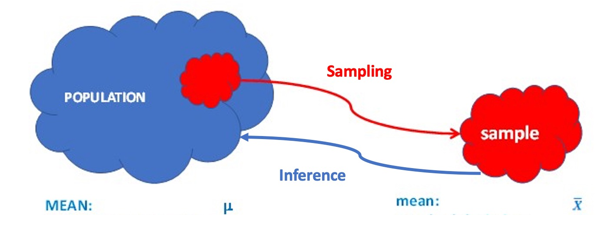
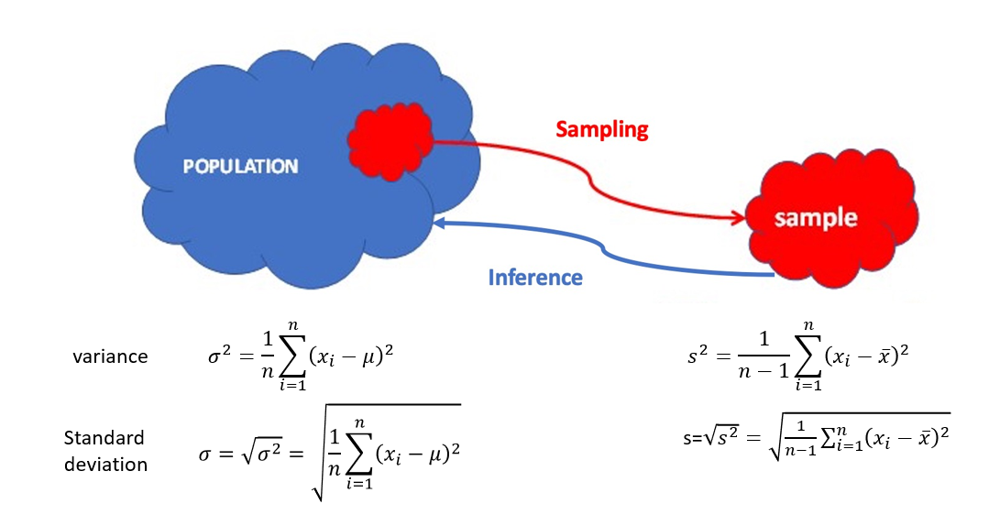
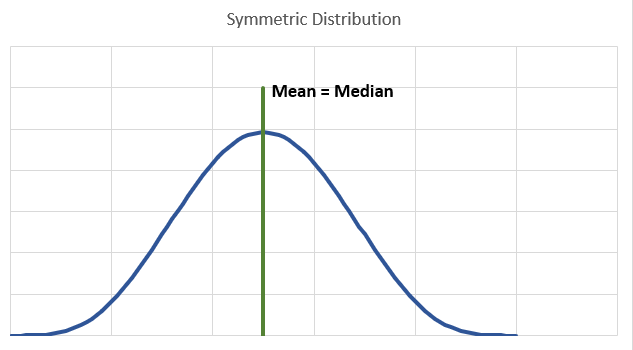
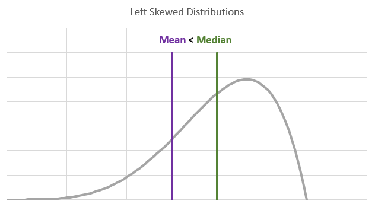
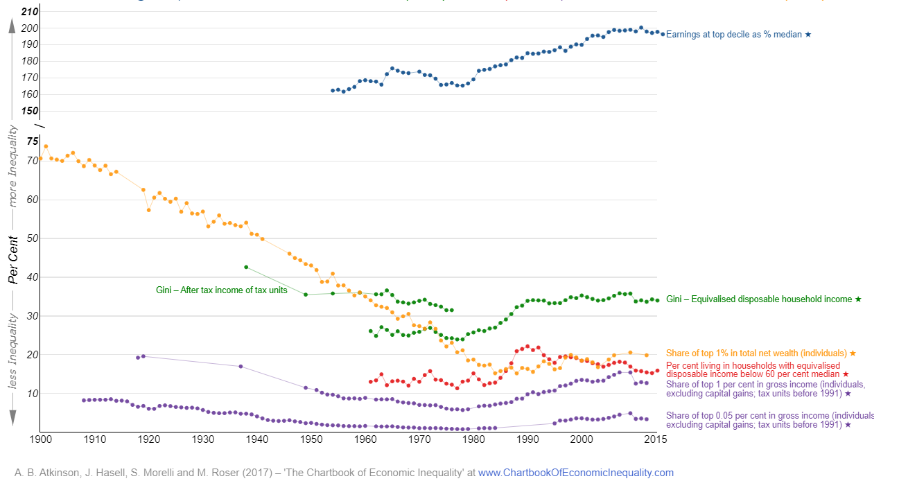

[1] 21 32 7 34 504 Numerical Descriptive Statistics
4.1 Introduction
Inequality is one of the biggest issues societies around the world have to deal with. Some societies are organised in ways which result in income and wealth distributions which are fairly equal (such as Scandinavian countries), others however, such as the United States and many South American countries, are organised in ways which result in large income and wealth concentrations in the hands of small groups.
Inequalities arise not only in income and wealth, but also in terms of access to education and healthcare. It has also been documented that certain groups in society are not only disproportionally represented in lower income and wealth categories but also have unequal access to opportunities. It is for this reason that the issue of inequalities has lately regained prominence in the public discourse. Part of this discourse is that the field of economics has also increased its efforts to measure inequalities (for a summary refer to Our World in Data), understand the reasons for the existing inequalities and propose policies which could address inequalities which are deemed to be too extreme (for a current summary of such efforts see the IFS Deaton Review).
A short video summary on the task taken on by the IFS Deaton Review on Inequality is available from here.
In the context of this statistics unit we are interested in income distributions as they are a very good example of how we use statistics. In particular we will look at different ways to summarise distributions of variables.
Here is an image of the Income Distribution in the UK in 2019 form the ONS.

This is a histogram, a graphical representation of the UK income distribution. As you can see, most people in the UK earn incomes between UKP 10,000 and UKP 40,000. The word most is actually not a very well defined term. We will use better terms later. There is a fairly small proportion of people earning more than UKP 60,000 a year. The image says that the measure displayed in the image is “Equivalised household disposable income of individuals”. It is disposable because it is calculated as income after tax. Equivalised incomes take into account whether someone lives in a single household or households with multiple people, acknowledging that larger households require more income to achieve the same standard of living as smaller households.
What this histogram illustrates is how incomes in the UK population is distributed. In some sense this histogram displays all there is to know about the income distribution for everyone in the UK. We could look at similar histograms for other countries and compare these, or we could look at the same image from other years for the UK to compare. However, it turns out that this is not an easy task.
To make comparisons between income distributions easier, it is useful to summarise the complex information in this distribution. We call such summary numbers, summary or descriptive statistics. There is no one number which can represent all the information in this distribution. But there are particular summary statistics which represent particular aspects of this distribution. In the above histogram you can already see two such summary statistics, the mean and the median income. These are both location measures or measures of the average. Other summary statistics can tell us something about the dispersion or variance.
In the following we will introduce different measures of location, dispersion and skewness. But these are not the only summative or descriptive statistics there are. In particular when looking at income distributions there is a lot of interest in the amount of inequality. A number of measures have been developed ot represent the amount of inequality in a particular income distribution. We will briefly discuss such measures at the end of this lesson.
We shall look at three categories of numerical summaries:
- Measures of Location
- Measures of Dispersion
- Measures of Skewness
4.2 Location Measures
A measure of location tells us something about what a typical value from a set of observations is. We sometimes use the expression central location, central tendency or, more commonly, average. We can imagine it as the value around which the observations in the sample are distributed.
In the above example of the UK income distribution two such measures are the median income (UKP 29,600) and the mean income (UKP 35,900). As we will see later, the fact that the mean is larger than the median actually tells us something important about the skewness of the distribution.
4.2.1 The mean
The simplest numerical summary (descriptive statistic) of location is the sample (arithmetic) mean:
\[\begin{equation*} \bar{x}=\frac{1}{n}\sum_{i=1}^{n}x_{i}=\frac{(x_{1}+x_{2}+\ldots +x_{n})}{n}. \end{equation*}\]
It is obtained by adding up all the values in the sample and dividing this total by the sample size. It uses all the observed values in the sample and is the most popular measure of location since it is particularly easy to deal with theoretically. You will see later that means play an important role when we come to statistical inference.
Let’s look at an example.
NoteExample
You get the following 5 observations: 6, 2, 8, 10, 9
What is the mean?
** Which of the following are correct formulae for the calculation of the sample mean? (Multiple correct answers are possible)**
- A: \(\bar{x}=0.2 \cdot (6+2+8+10+9)\)
- B: \(\bar{x}=\frac{1}{5} \cdot (6+2+8+10+9)\)
- C: \(\bar{x}=(6+2+8+10+9)/5\)
- D: \(\bar{x}=\frac{1}{4}(6+2+8+10+9)\)
- E: \(\bar{x}=\frac{1}{5}\cdot 6+\frac{1}{5}\cdot 2+\frac{1}{5}\cdot 8+\frac{1}{5}\cdot 10+\frac{1}{5}\cdot 9\)
ImportantExercise
You have the following information about a sample of values: 6,7,1,9,10. You also know that there were actually six observations in the sample and you know that the sample mean is 6. What is the missing observation?
The sample mean of 6 observations is 6, then the six observations add up ot 36. As the 5 given observations sum to 33, this implies that the missing information is 3.
ImportantExercise
One way to estimate the number of insects and investigate the possible decline of the number of insects is to count insects “collected” on number plates (or to count insect splats). Read this newsstory by Sky News. As you can read there has been a large estimated decline of insects between 2004 when this study was performed first and 2021 when it was repeated. In the the original research you can also get the following pieces of information:
- In 2004, 196,448 insects were sampled over 14,466 journeys comprising 867,595 miles, a splat rate of 0.238 splats per mile.
- In 2021, 11,712 insects were sampled over 3,348 journeys comprising 121,641 miles, a splat rate of 0.104 splats per mile.
What is the average number of insects splats found during a car journey in 2004 and 2021. (answer to 4 decimal points, 4dp, if not indicated otherwise)
Average in 2004 =
Average in 2021 =
What is the average length of a journey (measured in miles) in 2004 and 2021.
Average in 2004 =
Average in 2021 =
What is the average number of insects splats found per driven mile 2004 and 2021.
Average in 2004 =
Average in 2021 =
Why does just comparing the average splat rates per mile not give the best possible answer to the question of how much insects have declined?
\begin{itemize}
\item The sample in 2021 is significantly smaller than the sample in 2004.
\item The car journeys in 2004 were significantly longer than those in 2021.
\item Methods to measure the length of car journeys differed from 2004 (car odometer readings) to 2021 (an app calculated the journey length from satellite data)
\end{itemize}The sample size should not be such a big issue. The sample in 2021 still feels fairly substantial. But the quite different average length of journey could indicate that the type of journeys undertaken could be quite different (e.g. relatively more build up areas in 2021), and that may make a difference for the number of insects collected. Different ways to measure important aspects like journey length might matter, but is unlikely to make a uge difference.
NoteSpecial case - mean of binary variables
An important special case arises when we calculate the mean of a binary variable. Let’s say you have a sample of 7 people and you are interested in whether they have completed a university education. The data in the table below represent the available information.
| Respondent | Uni Degree | u |
|---|---|---|
| 1 | No | 0 |
| 2 | No | 0 |
| 3 | Yes | 1 |
| 4 | Yes | 1 |
| 5 | Yes | 1 |
| 6 | No | 0 |
| 7 | Yes | 1 |
The last column of the table is an alternative, and very useful way to represent this information. We created a new variable, \(u\), which takes the value 1 for all respondents who have a completed university degree and 0 for all others. We call this a binary variable, a variable which can take one of two outcomes.
When you calculate the sample mean of the new variable (\(u\)) you obtain
\[\begin{equation*} \bar{u}=\frac{1}{7}\sum_{i=1}^{7} u_{i}=\frac{1}{7} \cdot 4 = \frac{4}{7} = 0.5714 \end{equation*}\]
This is the sample mean of the variable \(u\) but also the proportion of respondents with a university degree. Here, and for future use, it is important that the sample proportion can be thought of as a sample mean (of the variable \(u\)).
ImportantExercise
What is the proportion of respondents who do not have a completed university degree?
As this is a binary variable this will be 1 - 0.5714. But it would also be the average calculated as follows: \(\frac{1}{7}\sum_{i=1}^{7} (1-u_{i})=\frac{1}{7} \cdot 3 = \frac{3}{7} = 0.4286\).
4.2.2 The median
Another measure, with which you may be familiar, is the sample median. This does not use all the values in the sample and is obtained by finding the middle value in the sample, once all the observations have been ordered from the smallest value to the largest. Thus, \(50\%\) of the observations are larger than the median and \(50\%\) are smaller.
NoteExample
Consider the following sample of values: 6, 2, 8, 10, 9
What is the mean?
What is the median?
You get the median by re-arranging the values in ascending order and then identify the middle value, here: 2, 6, 8, 9, 10. As we have 5 observations the middle observation is the 3rd, hence 8.
ImportantExercise
What to you do if you have an even number of observation? Say: 3, 9, 3, 4, 6, 7.\
You still line all the observations up in ascending order: 3, 3, 4, 6, 7, 9. Now you have two middle observation, the 3rd and the 4th, here these are 4 and 6. It is then the convention that we take the midpoint between these two values to get the median.
What is the mean?
What is the median?
So here the midpoint between 4 and 6 is 5. But really, any value between 4 and 6 meets the above definition of the median. Take for instance 4.5. 50% of observations are smaller than 4.5 and 50% are larger than 4.5. Therefore 4.5 also meets the definition of the median. But here we shall stick to the convention of using the average of the two middle values. (See the section on percentiles below for a follow up on this point)
As you can see from the above examples, to calculate the mean we use all the data in the sample. But for the median we only use the middle (or the two middle) observations. The median does not use all the data and is less influenced by extreme values (or outliers), compared to the sample mean. For example, when investigating income distributions it is found that the mean income is typically higher than the median income. You can see that also from the above graphical representation of the UK income distribution, where the mean income is around UKP 6000 larger than the median.
ImportantExercise
Return to the previous exercise with sample of values: 6, 2, 8, 10, 9. For these values the sample mean was 7 and the median was 8. Let us assume that the largest of these values is actually a 100 not a 10. What are the mean and median in this case?
What is the mean?
What is the median?
Imagine the highest \(10\%\) of earners in a country double their income, but the income of everyone else remains constant. What effect will that have on the mean on the one hand, and the median on the other?
The mean will
The median will
4.2.3 Weighted mean
In some situations, it makes more sense to use a weighted sample mean, rather than the arithmetic mean. Before we look at what a weighted mean does we shall reformulate the arithmetic mean to the following equivalent formula:
\[\begin{eqnarray*} \bar{x}&=&\frac{1}{n}\sum_{i=1}^{n}x_{i}=\frac{(x_{1}+x_{2}+\ldots +x_{n})}{n}\\ &=&\frac{1}{n} x_{1}+\frac{1}{n}x_{2}+\ldots +\frac{1}{n}x_{n} \end{eqnarray*}\]
You can see from the last form that the mean is a weighted sum of all observations where each observation obtains the same weight of \(\frac{1}{n}\).
Let’s say you want to figure out what the Covid incidence in Belgium, France, Luxembourg and Netherlands is in Week 10 of 2022. You have the following table with observation (drawn from spreadsheet, Covid_ECDC.xlsx, sheet: CrossSection).
| Country | Week | Case Rate | Population |
|---|---|---|---|
| Belgium | 2022 - Week 10 | 879.8 | 11,566,041 |
| France | 2022 - Week 10 | 1192.0 | 67,656,682 |
| Luxembourg | 2022 - Week 10 | 1726.2 | 634,730 |
| Netherlands | 2022 - Week 10 | 4795.3 | 17,475,415 |
Let’s say you calculate the arithmetic mean for the case rate (14-day average, calculated per 100,000 population) for these countries.
\[\begin{equation*} \bar{x}=\frac{1}{4}\sum_{i=BEL}^{NED}x_{i}=\frac{1}{4} \cdot 879.8 + \frac{1}{4} \cdot 1192.0 +\frac{1}{4} \cdot 1726.2 +\frac{1}{4} \cdot 4795.3 = 2,148.3 \end{equation*}\]
So the mean value is 2,148.3. Is that the case rate in the four countries taken together? \ No it is not. In the above calculation we weighted the data for France in the same way as that of Luxembourg although the latter only has about 1% of France’s population. If we wanted to use the above data to calculate what the Case rate across the four countries is we should take the different country sizes into account. Let’s supplement the above table with a new column which calculates the proportion of population each of the four countries has of the combined population (97,332,868).
| Country | Week | Case Rate | Population | Pop prop, \(w_i\) |
|---|---|---|---|---|
| Belgium | 2022 - Week 10 | 879.8 | 11,566,041 | 0.119 |
| France | 2022 - Week 10 | 1192.0 | 67,656,682 | 0.695 |
| Luxembourg | 2022 - Week 10 | 1726.2 | 634,730 | 0.006 |
| Netherlands | 2022 - Week 10 | 4795.3 | 17,475,415 | 0.180 |
As you can see, France has 69.5% (0.695) of the combined population and Luxembourg only 0.6% (0.006). So when we calculate the case rate across the four countries we should weigh France much higher. Note that the weights do sum to 1!
The way in which we calculate a case rate which then represents the (population weighted) average across the four countries is
\[\begin{equation*} \bar{x}_w=0.119 \cdot 879.8 + 0.695 \cdot 1192.0 +0.006 \cdot 1726.2 +0.180 \cdot 4795.3 = 1,806.659 \end{equation*}\]
Therefore the population weighted average is 1,806.659, a fair bit lower than the unweighted average.
Let’s look at the general formula for the weighted average:
\[\begin{equation*} \bar{x}_w=\sum_{i=1}^{n}w_{i}x_{i}=w_{1}x_{1}+w_{2}x_{2}+\ldots+w_{n}x_{n}. \end{equation*}\]
where the weights \(\left( w_{1},\ldots ,w_{n}\right)\) satisfy \(\sum_{i=1}^{n}w_{i}=1\). Note that equal weights of \(w_{i}=n^{-1}\), for all \(i\), gives the arithmetic mean. This type of average statistic if often used in the construction of index numbers (such as the Consumer Price Index, CPI) and it comes into play whenever we have data from different categories that are of different importance (as countries in the above example). In the calculation of the CPI this is relevant as price increases for food items are more important than price increases for music, as the purchases for the latter use a smaller proportion of a typical income.
ImportantExercise
Consider the following data on the youth unemployment rate in the following cities/towns
| City | Unemployment Rate | Population (18-25 yrs) |
|---|---|---|
| Springfield | 29.9 | 6,241 |
| Duckburg | 11.0 | 452,189 |
| Ningzhou | 13.9 | 7,457,632 |
| Gotham City | 16.4 | 13,298,115 |
What is the arithmetic (unweighted) mean?
What is the (population) weighted mean?
Note that in the above examples we used populations as the weighting variable. We also mentioned the calculation of a price index. In that example the weighting variable would be something like budget shares (food - high weight, music - low weight). The appropriate weighting variable depends on what you want to calculate.
4.2.4 Summary of average measures
All the above measures of location can be referred to as an average. One must, therefore, be clear about what is being calculated. Two politicians may quote two different values for the “average income in the U.K.”; both are probably right, but are computing two different measures!
There is another important difference between the arithmetic average and the median. The arithmetic average is really only applicable for continuous data, while the median can also be applied to discrete data which are ordinal (i.e. have a natural ranking). This makes the median applicable to a much wider range of data.
You may now ask what measure of central tendency is to be applied for nominal data (categorical data where the categories have no natural ordering). Neither the arithmetic average nor the median are applicable. The statistic to be used here is called the mode and it is that category that is represented the most amongst your dataset. Say you have 100 observations of which 55 are female and 45 male. Here the mode category for the gender variable is female.
One last note. Any of our statistics is based on a set of \(n\) observations. This language assumes that the observations we have is a sample only. The statistic \(\bar{x}\) is therefore often also called the sample mean. As we are usually interested in the mean of the entire population we use the sample mean as an estimate of the unknown population mean (which is often represented by \(\mu\)). Using \(\bar{x}\) to learn about \(\mu\) is what we call inference and is an important later topic.

4.2.5 Percentiles
So far all measures of location introduced are in some way measures of the typical, middle or average value. But we can think of other locations in a distribution. Consider the median. We lined up all the values (or in Excel you would sort the values) according to their size. Then you find a value which splits this line-up into half, or 50% smaller and 50% larger. That value was called the median. We choose 50% on either side as we were looking for something like the middle or average value.

That is not always what we want. In particular when looking at income distributions we are often interested in other percentage splits. For instance we may want to know what the income is which 20% of the population do not exceed. Or in other words the income where 20% earn less and 80% earn more. We shall call this the 20th percentile. Or we may be interested in the income which only 1% of the population exceed (or 99% earn less), the 99th percentile. The Occupy movement actually adopted “We are the 99%” as a political slogan.
The median is therefore identical to the 50th percentile.

All these percentiles are calculated in the same manner, starting with a line-up of all observations in order of their size. Then find a value which splits the data as requested.
ImportantExercise
Let’s consider the following sample with 10 observations, which are already in ascending order:\ 15, 18, 23, 28, 30, 35, 39, 48, 59, 80
What is the 50th percentile?
50th percentile =
You may remember from the discussion of the median, that actually any value between 30 and 35 could be the median, but that the convention is, for the median, to use the midpoint between 30 and 35.
Before we move to calculate other percentiles, let us first ask what percentile, for example, 18 is. 18 is one of the observations in the sample. There is one observation which is lower than 18 and eight which are larger. Therefore, \(1/(1+8)=1/9=0.111111\) or 11.1111% of observations are lower than 18.
What percentile is 23? \(2/(2+7)=2/9=0.222222\) or 22.2222% of observations are lower than 23. Think of these as exact percentiles. There is no other value which could be this percentile.
So when we calculate the 20th percentile, then we know that the 20th percentile is somewhere between 18 and 23. If you again took the midpoint between the two observations you would get 20.5 and indeed you would have 20% of observations below (only 15 and 18) and 80% of observations above (all eight from 23 to 80). But 20.5 is not unique. 21.1 would have the same property. In fact for any number between 18 and 23 you could say that 20% of observations are below and 80% of observations are above. The convention to calculate such a percentile is as follows:
- Calculate how, relatively close the the percentile is to the two nearest exact percentiles: \[\begin{equation*} \frac{0.2-0.1111}{0.2222-0.1111}=\frac{0.2-(1/9)}{(2/9)-(1/9)}= 0.8 \end{equation*}\] So the 20th percentile is at 80% of the distance between the 11.1111th percentile and the 22.2222th percentile.
- Which value is 80% of the distance between the 11.1111th percentile (which is 18) and the 22.2222th percentile (which is 23)? \(18+0.8 \cdot (23-18) = 22\). This is the 20th percentile.
In a similar way we are calculating the 90th percentile. We know that it has to lie between 59 and 80. We know that as 88.89% (=\(8/9\)) of observations are smaller than 59, and therefore the 90% percentile has to be between 59 and 80, as 80 is the largest observation and hence the 100th percentile. Where is the 90th percentile relative to the 88.89th and the 100th percentile (which is here the largest observation of 80)? \((0.9-(8/9))/(1-8/9)= 0.1)\). It is 10% the distance between 59 and 80. Therefore the 90th percentile is \(59 + 0.1 \cdot (80-59) = 61.1\).
You can do this with any percentile.
4.2.5.1 Example
What is the 27th percentile?
\(23 + (0.27-(2/9))/(1/9) \cdot (28-23)= 23 + 0.43 \cdot 5 = 25.15\)
4.2.5.2 Percentile calculation in Excel and in Programming Languages
The algorithm described above is exactly what softwares like Excel, R and Python do when they calculate percentiles. This is why we follow this convention. In Excel you can actually find two functions to calculate a percentile. The function you should use is the “PERCENTILE.INC” function.
There are a few special percentiles which you may come across at times and it is good to recognise these names.
| Percentile | Alternative name |
|---|---|
| 10th | Bottom/Lower decile |
| 20th | Bottom/Lower quintile |
| 25th | Bottom/Lower quartile |
| 50th | Median |
| 75th | Top/Upper quartile |
| 80th | Top/Upper quintile |
| 90th | Top/Upper decile |
4.2.6 Further Reading
The Khan Academy has a number of good resources:
4.3 Dispersion
A measure of dispersion (or variability) tells us something about how much the values in a sample differ from one another. The easiest measure of dispersion is called the range. All it measures is the difference between the largest and the smallest value in your observations. While this can be an informative piece of information, it has many shortcomings. First and foremost that it is influenced by outliers. Further, it only uses the two most extreme observations in the calculation. We therefore ignore a whole lot of information.
What we are really after is a measure of how closely your observations are distributed around the central location.
Let’s start with a very simple example, two samples of data (\(X\) and \(Y\)) with two observations each. For both samples the sample mean is identical, \(\bar{x}=\bar{y}=4\).
| Sample X | \(x_i\) | \(d_i=x_i-\bar{x}\) | Sample Y | \(y_i\) | \(d_i=y_i-\bar{y}\) | |
|---|---|---|---|---|---|---|
| Obs 1 | 6 | 2 | Obs 1 | 8 | 4 | |
| Obs 2 | 3 | -1 | Obs 2 | 3 | -1 | |
| Obs 3 | 3 | -1 | Obs 3 | 1 | -3 |
The columns \(x_i-\bar{x}\) and \(y_i-\bar{y}\) are the deviations from the respective arithmetic mean:
\[\begin{equation*} d_{i}=x_{i}-\bar{x} \end{equation*}\]
This measure is at the core of most measures of dispersion. It describes how much a value differs from the mean. The following image illustrates how to think of these deviations.

ImportantExercise
Looking at the above Table, which of the two samples are more dispersed?
Answer:
On average the observations from Sample Y are further away from the mean than those in Sample X.
What we want is a statistic, one value, which tells us something about the dispersion of the observations. As an average measure of deviation from \(\bar{x}\), we could consider the arithmetic mean of deviations, but this will always be zero. Confirm that for Sample X and Sample Y, but it will actually always be true. In other words the positive and negative deviations from \(\bar{x}\) (or \(\bar{y}\)) will always cancel each other out.
The key to understanding this is that, in terms of dispersion, it does not matter whether the deviation \(d_i\) is positive or negative. We need to find ways to summarise the extend of deviation. We could either look at the absolute deviation \(\left| d_{i}\right|\) (leading to the Mean Absolute Deviation - MAD - below) or at the squared deviation, \(d_{i}^2\) (leading to Mean Squared Deviation - MSD. Based on these two measures of dispersion the following two statistics are available:
- MAD: \(\frac{1}{n}\sum_{i=1}^{n}\left| d_{i}\right| =\frac{1}{n}\sum_{i=1}^{n}\left| x_{i}-\bar{x}\right| >0\)
- MSE: \(\frac{1}{n}\sum_{i=1}^{n}d_{i}^{2}=\frac{1}{n}\sum_{i=1}^{n}(x_{i}-\bar{x})^{2}>0\)
The MSD is easier to work with and lends itself to theoretical treatment. A more commonly used name for MSD is the variance. As you can see from the formula, it is calculated on the basis of \(n\) observations. If the data represent your relevant population then the formula for MSD is referred to as the population variance and it is often represented by \(\sigma^2\). If your observations represent a sample, then the formula for MSD is changed by replacing the factor \(1/n\) with \(1/(n-1)\):
\[\begin{equation*} s^2=\frac{1}{n-1}\sum_{i=1}^{n}(x_{i}-\bar{x})^{2} \end{equation*}\]
This is what is usually called the sample variance, abbreviated with \(s^2\). The slightly changed factor is due to ensures that \(s^2\) is an unbiased estimator for the unknown \(\sigma^2\) which is the term we are usually interested in. In a later topic we will talk about this property of unbiasedness. For now, just accept this.
4.3.0.1 Example
Calculate the sample variance of samples X and Y:\
Sample X: \(s^2=\)
Sample Y: \(s^2=\)
NoteDegrees of Freedom
To calculate the sample variance we divide the sum of the squared deviations by \(n-1\) and not by the sample size \(n\). We call \(n-1\) the degrees of freedom. Degrees of freedom are a concept that we will encounter frequently when it comes to statistical inference.
Consider Sample X above. We had three observations. We used the three observations to calculate the sample mean \(\bar{x}=4\) which we then, in turn, need to calculate \(s^2\). Think about the following, you want to change sample values in a way which delivers the same sample mean. You changed two already, observation 1 you changed from 6 to 8 and observation 2 you changed from 3 to 4. What could the third observation be? Well in fact you cannot chose, it has to be 0. The only way to have a sample of three where two observations are 8 and 4 and the sample mean is 4 is for the third observation to be 0. So you actually only had 2 (or 3-1) degrees of freedom.
The variance measures have two major disadvantages:
- The value you get for either \(\sigma^2\) or \(s^2\) has no easy interpretation. This is obvious when you think about the units in which the variance is measured. If your data are, say, income data, then the unit of the variance is \(\pounds ^2\). But what is the meaning of a squared pound sterling.
- The variances for different data sets are almost impossible to compare. The reason for that is best seen by realising that the value of the variance will change if you multiply each value by 2. However, if we multiply each observation by two, then really, nothing has changed about the dispersion of our data.
In order to address the first of these shortcomings we often refer to a different measure of dispersion, the standard deviation. This is related to the variance. In fact, once you calculated the variance you can obtain the standard deviation by taking the square root of your calculated variance
- Population standard deviation: \(\sigma=\sqrt{\sigma^2}=\sqrt{\frac{1}{n}\sum_{i=1}^{n}(x_{i}-\mu)^{2}}\)
- Sample standard deviation: \(s=\sqrt{s^2}=\sqrt{\frac{1}{n-1}\sum_{i=1}^{n}(x_{i}-\bar{x})^{2}}\)

Once you calculated your sample (or population) standard deviation, you can say that the average deviation of your observation from the mean is \(s\) (or \(\sigma\)). As the variance is always a positive measure, so is the square root of the variance, the standard deviation.
ImportantExercise
You have the following five observations:
Assuming that this is the population, calculate the following (all to 4 dp):
Mean, \(\mu\) =
Variance, \(\sigma^2\) =
Standard deviation, \(\sigma\) =
Assuming that these observations are a sample, calculate the following (all to 4 dp):
Mean, \(\bar{x}\) =
Variance, \(s^2\) =
Standard deviation, \(s\) =
A veterinarian weighed a sample of 6 puppies. Here are each of their weights (in kilograms): 1, 2, 7, 7, 10, 15.
The mean of these weights is \(kg\)
The variance is \(kg^2\)
The standard deviation is \(kg\)
4.4 Measures of skewness and higher order moments
Especially when we think back to the example of the income distribution, we recognise that the income distribution is not symmetric. Here is an image of a symmetric, left/negative skewed and right/positive skewed distribution.

ImportantExercise
The income distribution in the UK is .
It is important to recognise that the relation between the mean and the median tells us something about the skewness of a distribution. This is best illustrated with the following images.

When you are dealing with a symmetric distribution you will find the mean and the median to be the same. When we are dealing with sample data they may not be identical but very similar. The next image displays a typical left skewed distribution.

Here you can see that the mean is smaller than the median. We are having a few values of our random variable which are very small and they “drag down” the mean, but do not effect the median so much.
ImportantExercise
In the UK income distribution the mean income is the median income?
There are formal measures of skewness. We shall not introduce these in detail here. Not surprisingly one popular measure is based on comparing the sample mean and median.
4.5 Measures of inequality
Let us briefly return to the example of income inequality we started this lesson with. As you know, inequality is a major political and societal issue with lots of economic implications. We often differentiate between income and wealth inequality. But let’s briefly think about the income distribution introduced at the beginning of the chapter and reproduced here.
Two of the descriptive statistics we introduced already speak to aspects of inequality. Firstly the variance or standard deviation is a measure of the variety of incomes we see. The larger this measure the more differences we see in incomes. The second measure which is important in the context of this discussion is the skewness. We saw that the income distribution is right (positively) skewed meaning that we have lots of incomes at the lower end and a few very large incomes.
A lot of effort has gone into measuring the amount of inequality in different countries and across time. An excellent example of this is the Chartbook of Economic Inequality. This has been set up by Anthony Atkinson (1944-2017) who was a true giant in economic research into inequality.
Ideally one would want to develop one descriptive statistic that expresses all there is to learn from an income distribution about inequality. But there is no one such measure. The following measures, all of them essentially descriptive statistics describing certain aspects of an income distribution, are often used:
- The Gini Index. This is a measure which measures how far away from an equal distribution a particular income distribution is. Higher measures implying more inequality. In 2014 this measure was 34 in the UK, compared to 25.75 in 1980.
- Income Shares. For instance what share to the top 1% income earners have of the total income. In the UK that is currently around 13%
- Top percentiles as percentage of median income. For instance currently in the top decile income is around 200% of the Median income.
- Percentage of people with income below a certain level. E.g. currently in the UK around 15% of people live in households with income less than 60% of the median income.
Here we will not discuss the details of these measures. The following graph displays how these measures have evolved, for the UK, through time.

As you can see, inequality generally reduced through the 20th Century until around 1980. Since, the general direction of travel was that inequality increased.
ImportantExercise
Find on the website of The Chartbook of Economic Inequality the equivalent country chart for Malaysia.
Which of the following statements are correct? (multiple answers are possible)
While the change in inequality has lately been in different directions in the UK (increasing) and Malaysia (decreasing), Malaysia has a higher Gini coefficient indicating a higher level of inequality than the UK.
4.6 Further Resources
On the Khan Academy you can find more practice:
- An example for the calculation of the population variance
- Why do we need the sample variance?
- These two clips illustrates nicely why the sample variance uses the factor \(1/(n-1)\). First: giving an intuitive explanation of why we need the factor \(1/(n-1)\). Second: useing a simulation to convince you.